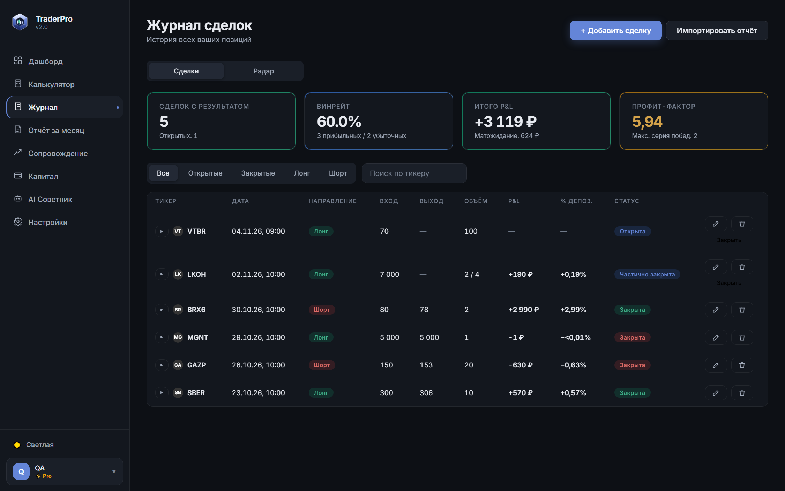
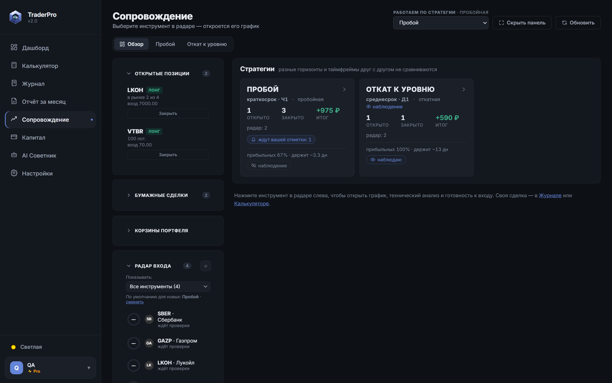
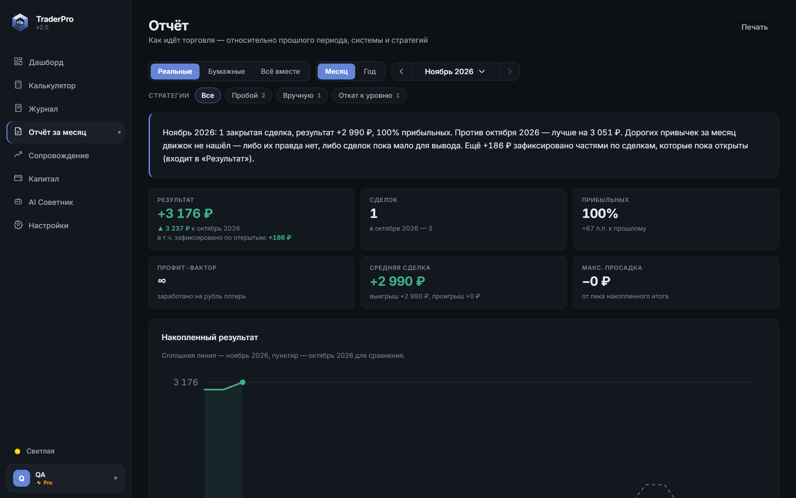

ГО лонга и шорта — раздельно
Т-Банк требует разное обеспечение на покупку и продажу, и оно меняется. Калькулятор берёт ГО той стороны, с которой вы входите, и показывает плечо.
Для трейдеров на российском рынке
Калькулятор сделки, журнал, импорт из Т-Банка, сопровождение позиций и честный разбор привычек — в одном месте.

Без обещаний прибыли.
Только контроль.
Идея
Рынок вы не контролируете. Зато контролируете размер позиции, стоп и собственные привычки. Всё остальное — шум.
Сервис не говорит, что покупать. Он считает вашу сделку до входа, ведёт вашу историю и показывает, где именно вы теряете деньги — цифрами, а не ощущениями.
Как это работает
Объём по вашему риску, стоп и цель. ГО на лонг и на шорт считаются отдельно — как у брокера, — плечо видно сразу. Лишнее отсекается до того, как вы нажали «купить».
Сделки подтягиваются из Т-Банка по токену «только чтение» или из отчёта. Покупки и продажи сопоставляются сами, дубли отсекаются, до записи вы видите предпросмотр.
Радар входа, ступени фиксации, сигналы и уведомления в Telegram — по вашим правилам, а не по настроению. Бумажные сделки робота показывают, как сработала бы система.
Отчёт за месяц, сравнение стратегий, «что стоит вам денег». Выводы о привычках — только от 25 сделок: меньше — это наблюдение, а не приговор.


Возможности
Т-Банк требует разное обеспечение на покупку и продажу, и оно меняется. Калькулятор берёт ГО той стороны, с которой вы входите, и показывает плечо.
Усреднение против позиции, тильт и отыгрыш, комиссионный налог, дневной лимит, карта времени — в рублях за период.
Отчёт PDF или Excel — или загрузка прямо по токену «только чтение». Сначала предпросмотр, запись только по вашей кнопке.
Прогоните стратегию по истории, а конец истории отложите и откройте один раз: если стратегия там тоже в плюсе — доверия к ней больше. Если нет — вы узнали это бесплатно.
Уведомления о сигналах и позициях, картинка графика, кнопки решений — без открытия сайта.
Робот ведёт виртуальные сделки по правилам вашей стратегии — сравните себя с системой без риска для денег.
Месяц против прошлого месяца, сравнение стратегий, «я против системы». Скоро — красивые PDF на почту и в Telegram.
Принципы
«Мы не угадываем рынок. Мы помогаем не делать одни и те же ошибки дважды.»
Никаких сигналов «купи — продай» и гарантий доходности. Сервис работает с вашими числами и вашими правилами.
Система считает, напоминает и показывает. Что делать с позицией — решаете вы, и это решение остаётся в журнале.
Привычки и статистика считаются кодом и проверяются тестами. Мало сделок — так и написано: «наблюдение», а не «приговор».
Вопросы
Сейчас регистрация бесплатная, без карты. Условия тарифов появятся позже, и о них сообщим заранее.
Для расчётов и журнала — нет. Для автоматической загрузки сделок и живых цен можно добавить токен Т-Инвестиций; достаточно права «только чтение». Приложение ничего не покупает и не продаёт без вашей команды.
Сейчас — Т-Банк (Т-Инвестиции): отчёты и загрузка по API. Другие брокеры добавим, когда появятся образцы их отчётов.
Нет. Сервис — рабочее место трейдера: расчёты, журнал и аналитика по вашим же данным. Торговля на бирже связана с риском потерь.
Начните с первой сделки
Бесплатно · без карты · за пару минут